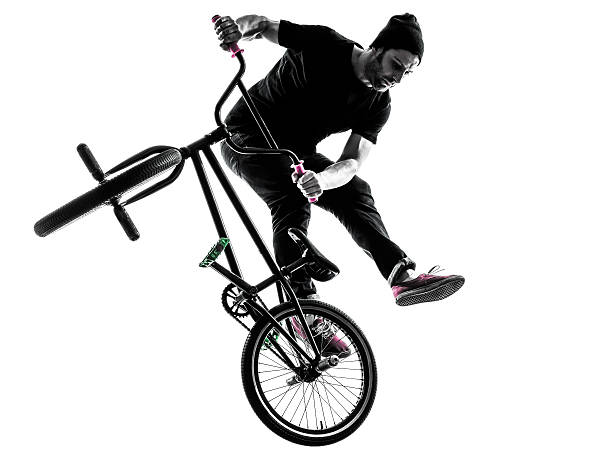
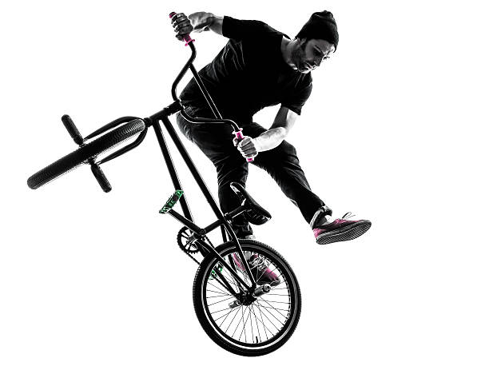
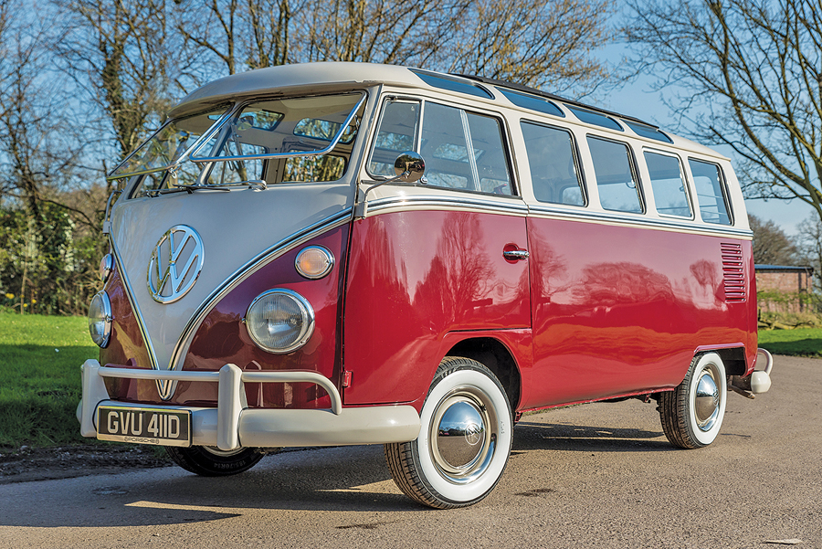

History
I grew up in Northern California's wine country, the Napa Valley. I was raised by my loving and hard working mother and father who always pushed me and my two older brothers to be the best that we could be. Instilling respect, loyalty, and determination into everything we did. My family always took perticular joy in sports of any kind, from Football to Paintballing my parents were always supportive. When I graduated high school I decided to head to Flagstaff Arizona to become a Mechanical Engineer. After my freshman year I switched to Computer Science and I never looked back. Being able to create something from nothing was an amazing feeling and I knew I was in the right field.
Hobbies
As a child I was always mesmerized by videogames and that is actually one of the driving forces that led me to study Computer Science. The dream as a
kid to create videogames for the world was an dream that never quiet left my mind and I still think about today.
Now I really enjoy biking of any kind usually BMX and mountain biking as well as camping and backpacking.
I still love playing videogames but it's hard to make time for it now. I play Rugby here in Flagstaff for the Landshark Rugby club where I met a great people who I'm
proud to call my friends including my amazing girlfriend Nicole.
Asperations
My personal asperations are to one day earn the oppertunity to help develop the next big videogame, and to create a peice of software that will change the world for the better in some way shape or form. I want to backpack the PCT (Pacific Crest Trail) while documenting the whole adventure. I love classic cars and I hope one day to own a 1966 Volkswagon Bus. The look of it always caught my eye and it's has such a unique style to it which represents my personality very well. In short I would like to leave this Earth having done something that will make my name live on through the years and have a hell of a time while doing it.
Personal Achievements
I've done may things in my life that I am proud of but my biggest achievment so far in my mind is graduating college with a degree I love and landing a job straight away. My capstone project at NAU sucked away my social life for a whole year but I would not change it for the world. What we produced was an excellent MVP (Minimum Viable Product) for our client that turned into the PIPS Project at the USGS. I learned a lot about who I am and even more about who I want to become and my friends are partially to thank in more ways to mention. I'm very happy with who I have become and I'm even more excited for what lies in the road ahead. I've never been more driven to work and I'm loving every second of the work that I am doing with my Degree.


Summary
I'm currently working and living in Flagstaff with my beautiful girlfriend Nicole and our dog Buddy. I'm working at the USGS office in Flagstaff in the Astrogeology building developing a publication tool for researchers around the world. I am currently management the Landshark website, keeping data and events on the cite up to date. I love being in Flagstaff and I plan on being here for a while but my dream is to one day make a living in California close to where I grew up.